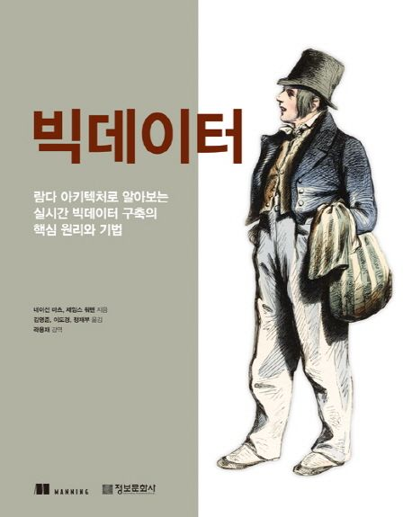
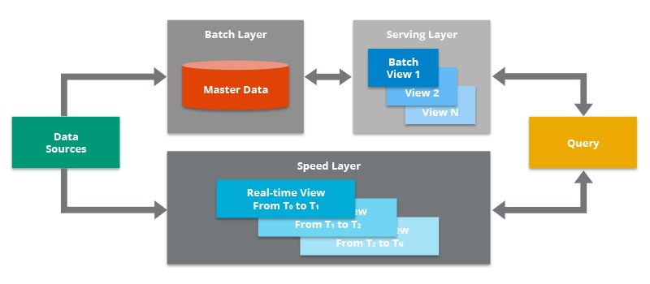

네이선 마츠의 명저, 빅데이터에 관한 2장까지의 감상
RDBMS, NoSQL이 아닌 빅데이터를 위한 새로운 시스템이 필요했던 이유

빅데이터를 위한 새로운 패러다임인 람다 아키텍처1를 제안한 네이선 마츠2의 명저 <빅데이터>3로 팀 스터디를 진행하고 있다. 지난주 수요일부터 스터디를 시작해 오늘까지 2회차를 완료하여 책의 2장까지 밖에 읽어보지 못했지만, 지금까지의 감상을 적어보려고 한다. 사내에 구축된 빅데이터 시스템을 이용하는 고객의 입장에 가까웠던 사람으로서 2장까지의 내용만으로도 얻을 수 있는 바가 참 많았다.
먼저 본 책의 1장은 기존의 전통적인 RDBMS4와 NoSQL을 바탕으로 빅데이터 시스템을 구축했을 때의 한계와 더불어 이를 탈피할 수 밖에 없었던 이유에 대해 차근차근 설명해주는 것으로 시작된다. 그러면서 제안하는 새로운 패러다임이 람다 아키텍처에 해당한다.
데이터 시스템에 관해 명확하게 정의하는 부분이 1장에서 또 하나의 중요한 부분이다. 데이터 시스템이란, 과거부터 현재까지 얻은 정보에 기반해 질의에 대한 응답을 내어주는 시스템을 말한다. 데이터 시스템의 본질은 다음과 같은 한 줄의 표현식으로 정리된다.
- query = function(all data)
스마트폰, ioT 등 수집할 수 있는 데이터의 양이 방대해짐에 따라, 위와 같은 데이터 시스템의 본질을 지키기 위해 새로운 아키텍처가 필요했다. 큐, 샤딩과 같은 기술로 버틴다고 한들 인적 내결함성5, 속도, 유연성, 유지보수, 디버깅 등 빅데이터 시스템에 요구되는 여러 속성들을 만족시키기란 결코 가능하지 않았다.
람다 아키텍처는 일괄처리 계층(batch layer), 속도 계층(speed layer), 서빙 계층(serving layer)으로 구성되며, 일괄처리 계층에 위치한 마스터 데이터 집합은 람다 아키텍처의 핵심에 해당한다. 
특히, 마스터 데이터 집합의 데이터 모델로 강력하게 추천하는 팩트 기반 모델(fact-based model)은 2장에서 제시하는 데이터의 핵심 속성 3가지(원시성, 불변성, 영원성)를 지킴과 동시에, 빅데이터 시스템에서 드물지않게 발생하는 중복 문제 회피를 위한 식별가능성(identifiability)까지 보장해줄 수 있다. 온라인 서비스를 이용하는 고객들의 데이터를 수집하기 위해 잘 설계된 빅데이터 시스템에 로그 ID를 심어두는 이유도 이러한 식별가능성을 보장하기 위함이다.
이에따라 람다 아키텍처는 앞서 이야기한 빅데이터 시스템의 여러 속성을 만족함과 동시에 데이터 시스템의 본질을 충족시킨다. 또한, 관계형 데이터베이스의 경우 질의가 저장소 레벨에 있는 데이터에 직접 수행되기 때문에 정규화 또는 비정규화 스키마 둘 중 하나를 골라야하는 문제가 존재한다. 이에 따라 필연적으로 질의 효율성과 데이터 일관성의 경중을 따져 두 스키마 타입 중 하나를 골라야 한다는 문제가 있는데, 람다 아키텍처의 경우 질의 처리와 데이터 저장 목적이 깔끔하게 분리되어 있어 비정규화와 정규화의 이점을 모두 가질 수 있다. 일괄처리 계층에 위치한 마스터 데이터 집합은 팩트 기반 모델로 완전히 정규화되며, 서빙계층에 위치한 일괄처리 뷰는 효율적인 질의 처리를 위해 비정규화 테이블로서 존재하기 때문이다.
이처럼 2장까지의 내용은 빅데이터의 시대가 도래함에 따라 람다 아키텍처를 새로운 패러다임을 제시할 수 밖에 없었던 배경에 대해서 친절하게 설명을 해주는데, 데이터 엔지니어가 아닌 내게도 굉장히 유익하고 필요한 내용이었다. 특히 올해 하둡 에코시스템과 Hive 메타스토어에 기반해 구축한 사내 온프레미스 데이터 레이크를 클라우드 기반 레이크하우스 플랫폼인 데이터브릭스로 이전을 해왔는데, 이때 데이터브릭스에서 제공하는 일종의 트레이닝 세션에서 람다 아키텍처의 훌륭한 대안이라고 하는 델타 아키텍처에 대해서 이야기를 해줬던 때가 기억이 나는데.. 이땐 배경 지식이 전혀 없어 들으면 졸리고 지루하기만 했다.
그러나, 본 책의 2장까지의 내용을 이해하고 나니 대체 빅데이터를 다루는 데에 이러한 복잡한 아키텍처가 왜 필요로 됐는지, 과거에 어떤 고민이 있어 이러한 아키텍처를 설계하게 되었는지 그 필요성에 대해서 비로소 공감을 할 수 있게되었다. 해당 기술이 개발된 배경에 공감이 되니, 이제서야 호기심이 생기고 알고 싶어지는 느낌이 든다. 역시 어떤 기술을 공부하기 위해선 그에 앞서 해당 기술이 등장할 수 밖에 없었던 배경, 모티베이션을 이해하는 것이 먼저인 것 같다. 그래야, 그 기술을 자세히 알고 싶어지는 마음이 든다.
책의 모든 장을 공부할 계획은 아니다. 실제 시스템을 구축하는 실습을 위한 장도 있고, 내용이 꽤 헤비하다. 빅데이터 시스템을 바닥부터 설계해야하는 엔지니어라면 훌륭한 지침서가 될 수 있겠으나, 난 그러한 포지션이 아니니 필요한 알멩이만 뽑아먹으려고한다. 다행히 팀 내에 소프트웨어 엔지니어로 커리어를 시작해 데이터 분석가로 전향한 훌륭한 시니어 선생님…이 계셔서 스터디에 정말 많은 도움을 받고있다. 이 책도 당연히 선생님이 추천을 해주셨고, AI engineer, Data Scientist/Analyst가 읽으면 좋을만한 장들을 꼽아주셨다.
책의 목차를 얼핏보면 바닥부터 시스템을 빌딩하는 엔지니어에게만 도움되는거아니야? 하고 생각할 수 있는데, 내가 머지않아 수행해야하는 일에 정말 많은 도움이 될 것으로 보인다. 이 일의 배경은 다음달 말쯤 앞두고 있는 사내 통합 실험 플랫폼 런칭에 있다. 실험 분석 자동화를 위해 실험 메타 정보 API를 요청을 드렸었는데, 이를 데이터브릭스에 ETL하는 것은 내 몫이다. 이 책을 만나지 않았더라면 빅데이터의 속성과 데이터 시스템의 본질을 전혀 고려하지 못한채로 데이터를 쌓아나갔으리라 생각한다.
시스템을 밑바닥에서부터 만드는 일이 아닌, 이정도 수준의 일은 데이터 엔지니어를 제외한 데이터 직군 누구나 마주할 수 있다. 그러므로, 본 책은 꼭 시스템을 빌딩하는 엔지니어 뿐만이 아닌 빅데이터 시스템을 이용하는 고객에 가까운 나머지 데이터 직군들에게도 훌륭한 지침서가 될 수 있다고 생각한다. 빅데이터 시스템을 이용하는 고객이자 분석에 필요한 데이터 ETL, 간단한 데이터파이프라인 설계까지 해야하는 사람으로서 이러한 시스템의 본질에 관한 이해없이 일을 수행한다면, 그 일을 완료할 수 있을지언정 그 일의 품질에는 명확한 한계가 존재할 것이라 생각한다.
지금이라도 이 책을 만나 이러한 부분에 호기심이 생겨서 다행이다. 우리팀 시니어 선생님의 말을 빌려보자면, 빅데이터 시스템을 만드는 사람이 아닌 이용하는 사람으로서 이에 관해 공부하는 것은 Product Owner가 온라인 통제 실험에 관해 공부하는 것과 비슷한 맥락이랄까?.. 이렇게 이야기하니 왜 그간 호기심을 안가졌었는지 반성이 됐다.
Footnotes
Lambda Architecture↩︎
Nathan Marz, 소프트웨어 엔지니어이자 데이터 시스템 설계 전문가로 빅데이터 처리 아키텍처인 람다 아키텍처를 제안한 인물이다. 그는 또한 트위터에서 일하며 실시간 스트리밍 데이터를 처리하는 데에 매우 중요한 도구인 Storm 프로젝트를 개발하기도 했다.↩︎
원서 명 Big Data: Principles and best practices of scalable realtime data systems↩︎
Relational Database Management System, 관계형 데이터베이스 관리 시스템. (e.g. MySQL)↩︎
human fault tolerance, 인간의 실수에 저항할 수 있는 능력↩︎
Reuse
Citation
@online{bang2024,
author = {Bang, Taemo},
title = {네이선 마츠의 명저, 빅데이터에 관한 2장까지의 감상},
date = {2024-08-21},
url = {https://taemobang.com/posts/2024-08-01-book-hypothesis/},
langid = {kr}
}